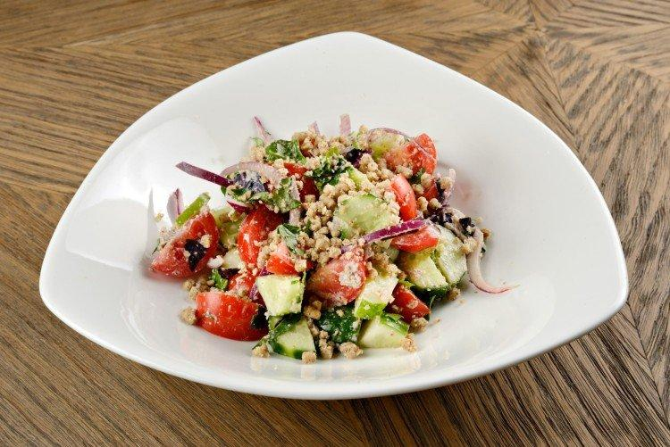
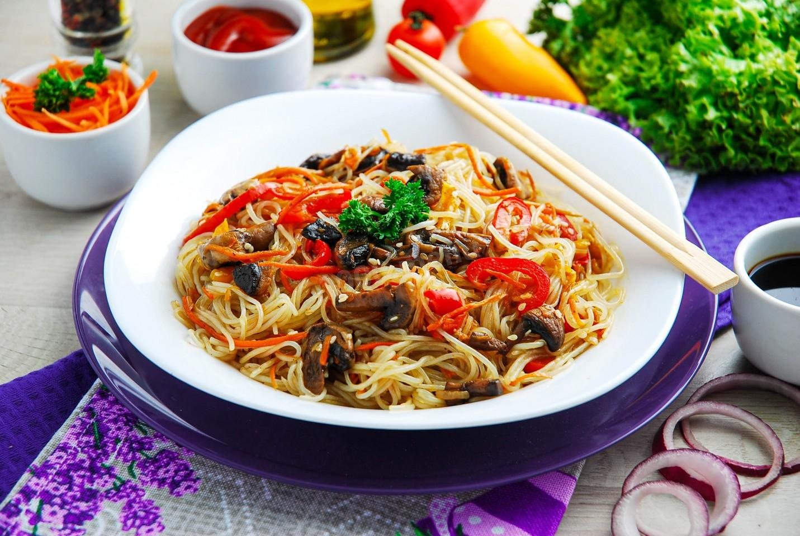
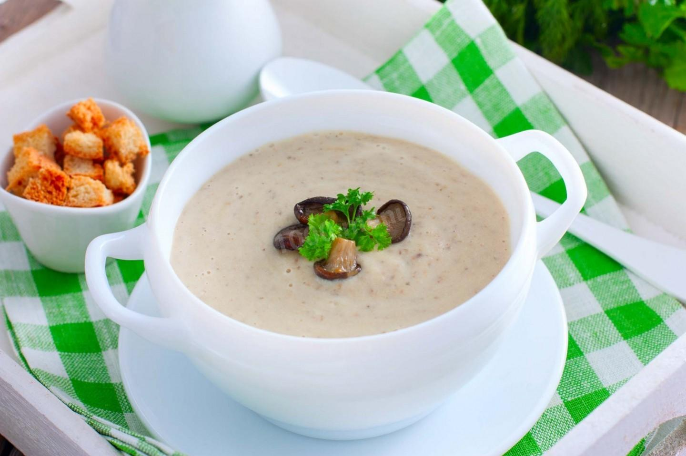
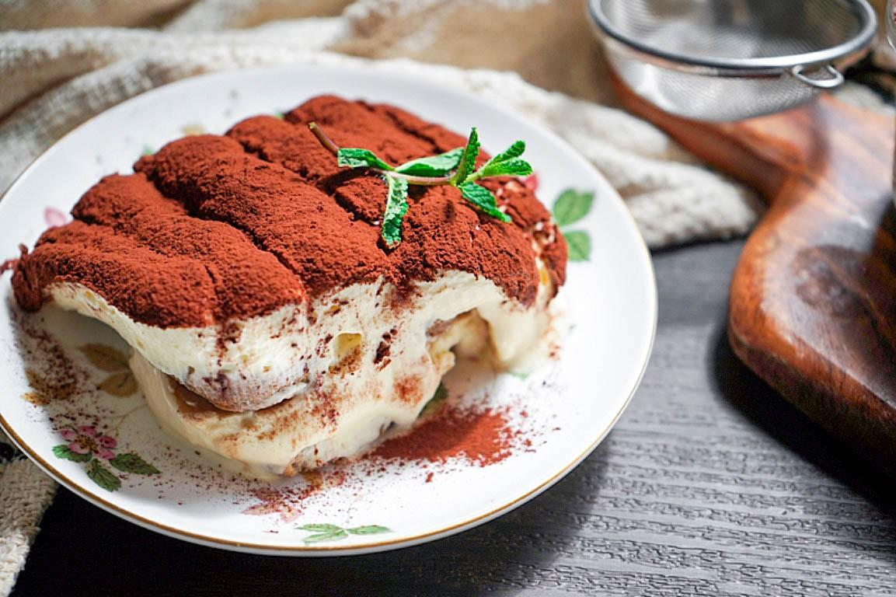
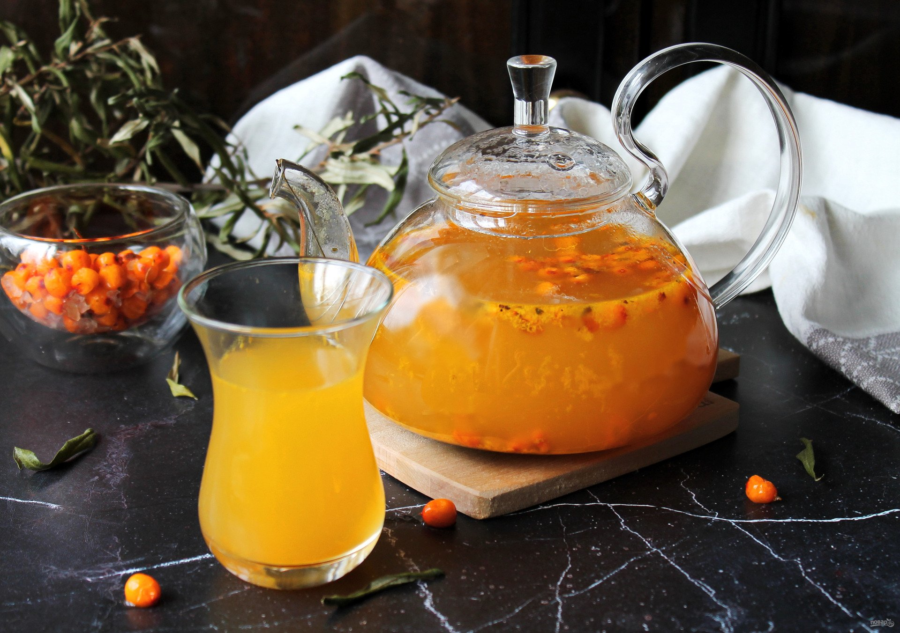

Мои любимые блюда
| Название блюда | Оценка (1-10) | Рецепт | Фото |
|---|---|---|---|
| Салат с огурцами, помидорами и орехами | 10 | Рецепт салата (№ 5) |  |
| Фунчоза с грибами и овощами | 10 | Рецепт фунчозы |  |
| Суп-пюре грибной со сливками | 9 | Рецепт супа |  |
| Домашний классический тирамису | 10 | Рецепт тирамису |  |
| Облепиховый чай | 10 | Рецепт чая |  |